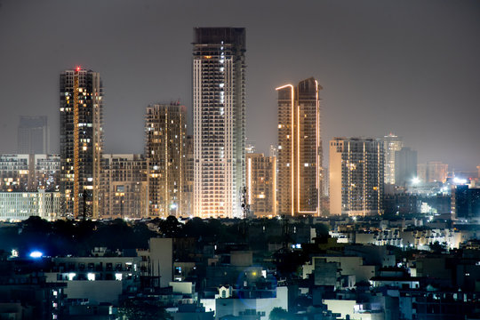
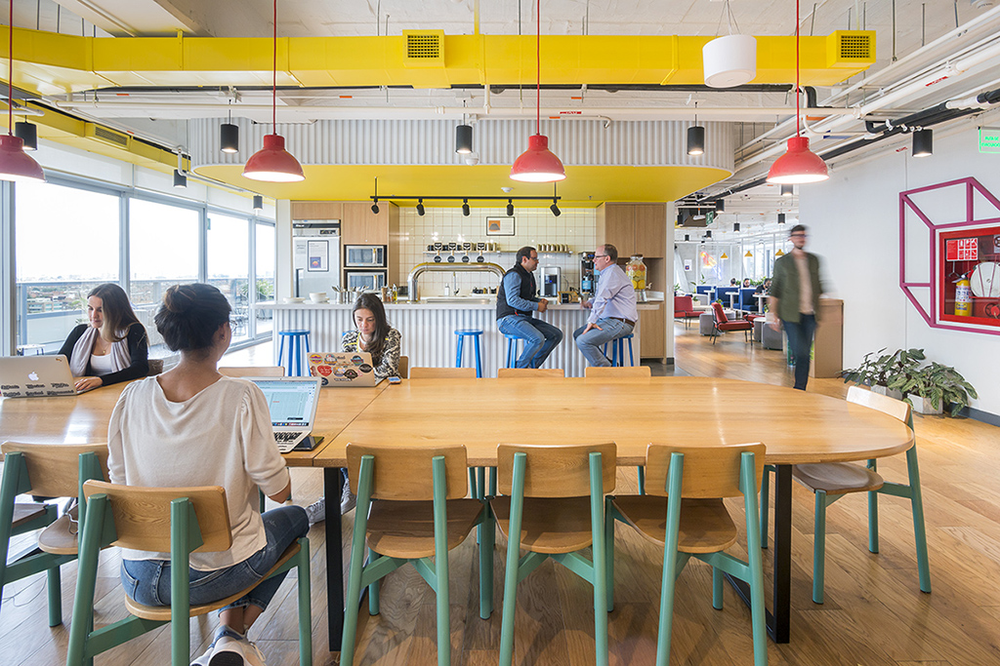
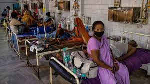

The digital divide refers to the gap between those who have access to information and communication technologies and those who do not.
This gap can be caused by various factors, including income inequality, geography, education, and age. The digital divide can have a significant
impact on people's lives. It limits access to education, employment, healthcare, and other essential services. People with computers and internet
access have access to a whole world of information and opportunities, while those without it are left behind.
The digital divide isn't only about owning a computer or having internet access; it's about knowing how to use technology to learn, work, and connect with others.
It's about taking advantage of all the things the digital world has to offer.
The Impact of the Divide
In today's digital age, having access to technology isn't just a luxury; it's a necessity. But here in India, there's a significant gap between those who have digital tools at their fingertips and those who don't. This divide has some pretty serious consequences, affecting not only individual lives but society as a whole.
Think about it: for many folks in India, not being connected digitally means missing out on job opportunities. Without the right skills and access to technology, they're left out of the thriving digital job market, struggling to make ends meet.
Businesses in remote or less-connected areas face a similar problem. It's tough for them to compete globally, which puts a damper on economic growth and innovation. And that, in turn, holds back the progress of the whole country.
Now, when it comes to education, things get even trickier. Students in rural areas or from disadvantaged backgrounds often can't get quality online education. This just makes the educational gap wider, keeping social inequalities in place. It's like a cycle that's hard to break.
But it's not just education. The digital divide also means some people can't access crucial information about healthcare, government services, or social welfare programs. So, they end up with poor health, miss out on educational opportunities, and can't access the benefits they should.
And what about being part of the community? With limited digital skills and access, a lot of Indians can't fully participate in discussions, elections, or speak up about important issues. That weakens our democratic processes and leaves out voices from marginalized communities.
On a personal level, the digital divide leads to loneliness and missed chances for personal growth. Without digital tools, it's hard to connect with family, friends, and the wider world.
And having to go in person for basic services like banking or government stuff? That's a hassle, especially for people in rural areas or those who don't have many resources. It's like an extra burden they shouldn't have to carry.
Lastly, without access to online learning and digital resources, it's tough for individuals to learn new skills and grow personally. In a world that's becoming more and more digital, that's a big disadvantage.
Bridging this digital divide in India isn't just about giving people access to technology. It's about making our society fairer and more inclusive for everyone. We need to fix infrastructure issues, teach digital skills, and make sure technology is affordable so that everyone can thrive in the digital age.
Marginalised Groups in India Stuggling to Bidge the Digital Divide
Digital Divide in India
Gender Disparities
Only 31% of women own a mobile phone in India compared to over 60% of men. The gender gap — between men
and women is not only about cellular phones and internet access. This inequity also shows all the other biases
that India's women have had to face — from a disparity in education opportunities to moral policing. Women are
often more likely to live in poverty, limiting their ability to afford internet access and devices.
They also have lower literacy rates and limited access to education, hindering their digital literacy and skills.
In India, smartphones have become a source of conflict regarding gender issues. Some rural communities restrict
unmarried young women from using phones due to safety concerns surrounding online harassment and privacy violations. Such restrictions
make women hesitant to engage fully in the online world.
Water Filling Stats Bars
The Red graph above represents the 30% women and the Green graph represent the 61% men that use the internet!
Indian women are 15% less likely to own a mobile phone, and 33% less likely to use mobile internet services than men.
In rural India, the gender gap in internet usage is even wider, with only 8% of women using the internet, compared to 20% of men.
The gender gap in internet usage is also wider among women from marginalized groups, such as women from low-income households, women with disabilities, and women from rural areas.
Caste Inequalities
In India, the digital revolution has changed many people's lives,
but not everyone's. For many people from lower castes, the
internet and digital technologies are still out of reach.
This digital divide is deeply rooted in India's complex caste system and
has far-reaching consequences, limiting opportunities and perpetuating social inequalities.
Given the increasing role of technology in providing access to essential services like education and healthcare,
the issue of the digital divide based on caste in India, where large socioeconomic
gaps persist between different caste groups, demands urgent attention.
Interactive Pie Charts
Access to Formal Financial Services (%)
Understanding: Access to formal financial services is highest among the General Category and lowest among the ST category.
Access to Computers (%)
Understanding: The General Category has better access to computers compared to other categories.
Literacy Rate (%)
Understanding: Literacy rates are the highest in the General Category, followed by OBC, SC, and ST.
Average Years of Schooling
Understanding: General Category has the highest average years of schooling, while ST has the lowest.
Unemployment Rate (%)
Understanding: The General Category generally has lower unemployment rates compared to other categories.
Rural-Urban Divides
As India moves forward in a digital world, a big difference exists
between rural and urban areas in how they use technology. While
urban India is using the latest technology, rural India is having
trouble keeping up. This is because rural areas don't have the same
infrastructure, internet, or training as urban areas. This gap is
having a big impact on rural communities, making it harder for them
to get ahead.
According to the 2022 National Family Health Survey (NFHS), only 48.7% of rural Indians have ever used the internet, compared to 72.5% of urban Indians.
There are a lot of factors that contribute to the digital divide between rural and urban India. One of the factors is infrastructure. Rural areas usually have less reliable and slower internet connections than urban areas. The next thing is affordability. Smartphones and data plans are more expensive in rural areas than in urban areas.
Another factor is education. Rural Indians have less access to quality education, which can make it difficult for them to learn how to use digital technologies.
Mind Map: Digital Divide in Rural and Urban Places
Digital Divide in Rural and Urban Places
Infrastructure Gap
Limited broadband availability in rural areas
Lack of access to computers and devices
Inadequate communication infrastructure
Socioeconomic Factors
Lower income levels in rural areas
Limited digital literacy and education
Language barriers and cultural differences
Geographic Challenges
Remote locations and difficult terrain
Higher costs of infrastructure deployment
Limited competition among service providers
A digitally empowered India
Welcome to a digitally empowered India, where technology is transforming lives.

A bustling, connected urban center, where high-speed internet and modern technology,
technology empowers people to create, innovate, and connect in new and exciting ways. Where everyone has the opportunity to benefit from the power of technology.
A world of knowledge at their fingertips, where students can explore topics at their own pace and in their own way.
A collaborative learning environment, where students from all over the world can work together on projects and share ideas.
A bustling online marketplace, where consumers shop with ease and confidence, using the latest digital payment methods.
Readily available products and services, with the convenience of one-click checkout and secure payment processing.
A convenient and accessible way to connect with doctors, specialists, and other healthcare providers, regardless of your location.
A personalized and proactive approach to healthcare, where technology helps you to monitor your health, manage your conditions, and prevent future problems.

High-speed internet cafes provide people with access to high-speed internet and computers at an affordable price. This makes it possible for people to work remotely, start their own businesses, and access educational resources and entertainment.
India with Fragmented Connectivity
Welcome to the Land of digitally divided.
Limited or nonexistent digital infrastructure in the educational sector can significantly impact students' learning outcomes. It can make it difficult for students to access online educational resources
A world where limited or slower internet connections hinder progress, excluding many from the digital revolution.

Limited access to healthcare in a digitally excluded world can lead to an increased risk of preventable deaths and illnesses, delays in diagnosis and treatment, and a reduced quality of life.
Social exclusion due to limited access to digital technologies in a digitally excluded world can lead to isolation, loneliness, and a decreased sense of community.
People who are digitally excluded may face a number of work exclusions, such as difficulty finding and applying for jobs or even performing certain job tasks.
.png)
.png)